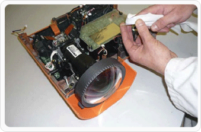
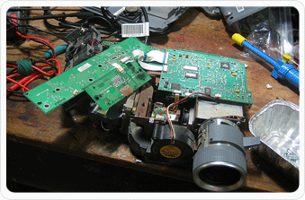
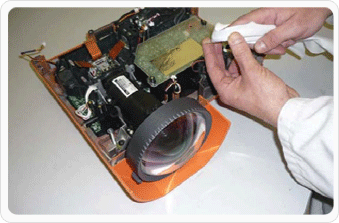
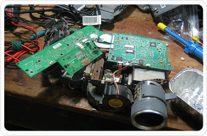

Repair Services
Out Of Warranty Projector Repair
There is no need to worry if your projector's warranty is expired. Our trained professionals perform
complete evaluation and diagnosis for your projector. They not only resolve issues but also align and
adjust optical system.
Not repairable parts are replaced with your approval and tested by our quality engineers before shipping
back to you. It usually take 5 business day if parts are available in stock.
You can get pricing details by contacting customer support.
Lamp (Bulb) Repair/Replacement
Our trained professionals perform complete evaluation and diagnosis for your projector. They not only resolve
issues but also align and adjust optical system.
Not repairable parts are replaced with your approval and tested by our quality engineers before shipping
back to you. It usually take 5 business day if parts are available in stock.
The following items are NOT covered by the Manufacturer's Warranty and will be billed separately
- Consumables like Lamps, Cables & Remotes
- A $65 evaluation fee will apply If No Defect is Found.
Preventive Maintenance Projector Repair
A regular service and clean will extend the life span of your projector, and maintain a perfect image quality
throughout. Any fault will be caught early and repaired thereby avoiding any excess costs to yourself, and
ensuring an excellent picture, and a greatly extended life of your projector.
Following aspects are
viewed for preventive measures:
- 41 point inspection
- Clean & align optics/LCD pan
- Clean or replace air filter
- Remove optic contamination
- Confirm convergence of LCD panels
- Verify color quality
 


